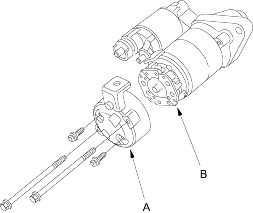
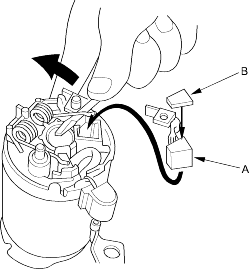

- Install the starter end cover (A) to retain the brush holder (B).

Starter Reassembly (D16V1 (KG, KR, KS models) engine with M/T)
- Install the armature in the housing and install the brush holder.
- Pry back each brush spring with a screwdriver. Install the brush (A) and insulator (B) in the holder, then release the spring against the insulator.
NOTE: To seat new brushes, slip a strip of #500 or #600 sandpaper, with the grit side up, between the commutator and each brush and smoothly rotate will be sanded to the same contour as the commutator.

- Install the end cover.